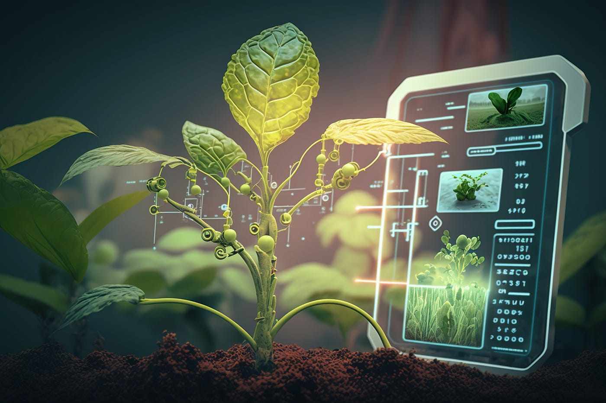
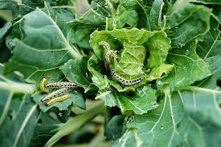
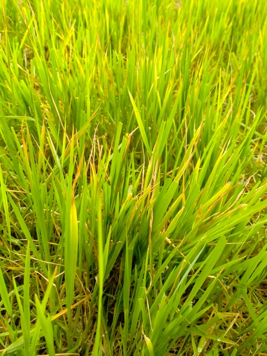
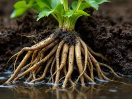
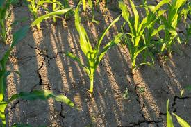
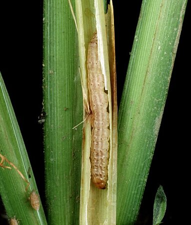

Leaf Spot
Disease: Tomato crop disease
Solution: Fungicide spray

Farming is the backbone of our country, but farmers face many problems.
Early detection helps save crops and increase production.


Disease: Tomato crop disease
Solution: Fungicide spray

Disease: Vegetable damage
Solution: Neem spray

Disease: Rice deficiency
Solution: Add nitrogen

Disease: Grapes disease
Solution: Sulfur spray

Disease: Root decay
Solution: Avoid overwatering

Disease: Unwanted plants
Solution: Remove manually

Disease: Water excess
Solution: Improve drainage

Disease: Water shortage
Solution: Drip irrigation

Disease: Salt in soil
Solution: Gypsum

Disease: Poor production
Solution: Improve soil

Disease: Rice insect
Solution: Insecticide

Disease: Chili leaf curl
Solution: Pest control

Disease: Potato disease
Solution: Fungicide

Disease: Tomato rot
Solution: Proper storage

Disease: Plant drooping
Solution: Maintain water